A friendly, no-rush walkthrough — just follow along one picture at a time and you'll have it done in about 10 minutes.
What is Google Analytics, and why are we doing this? Think of it like a visitor counter for your website — it quietly keeps track of how many people visit, where they come from, and which pages they like most. It's completely free, and it belongs to you. Nobody can take it away from you.
Below, we'll do this in two parts. Part 1 creates your very own Google Analytics account (skip this if you already have one). Part 2 is just three clicks to give me access as an "Administrator," so I can set everything up correctly on the technical side for you.
Take your time. There's no way to break anything here — every step can be undone, and I'm only ever one message away if something looks different on your screen.
Already have a Google Analytics account for your business? Skip straight down to Part 2.
Google calls this "creating an account" — but really, it's just naming your little corner of Google Analytics. Most people simply use their business name.
Type your business or organization's name into the box, then click Next.
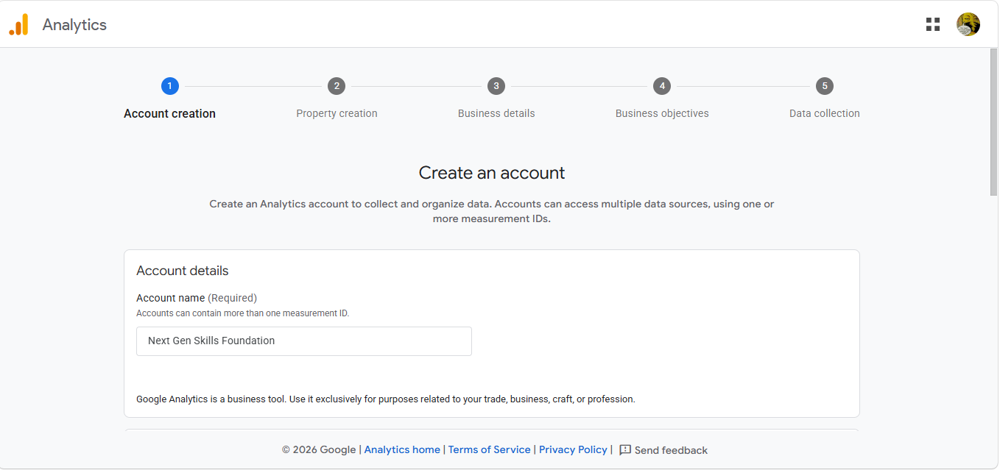
In this example, we typed "Next Gen Skills Foundation" — you'll type your own business name here instead.
Google will show you a list of checkboxes about how your data can be used. These are all optional extras — the default (all checked) is perfectly fine and is what most businesses choose.
You don't need to change anything here. Just scroll down and click Next.
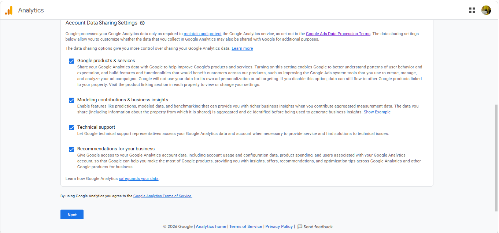
A "property" is simply Google's word for your one website. It's asking for a name (just for your own reference), your time zone, and your currency.
Enter your business/website name again, choose your country/time zone and currency, then click Next.
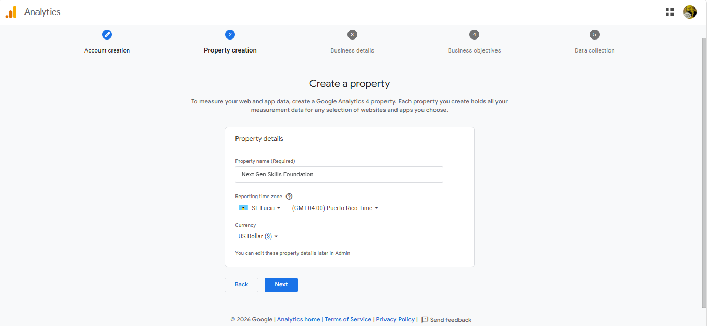
This helps Google tailor a few of its reports and tips to businesses like yours. There's no wrong answer here.
Pick the industry category that fits best, choose your business size, then click Next.
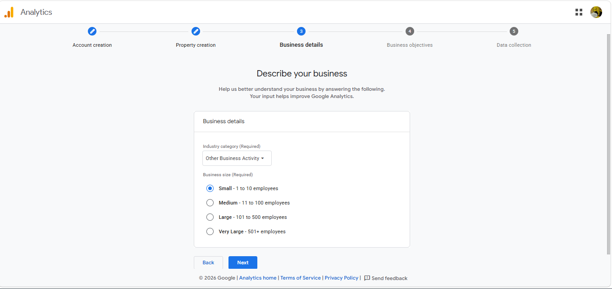
This is just telling Google what you care about most, so it can highlight the right reports for you. Most small businesses do well with these two.
Tick "Generate leads" and "Understand web and/or app traffic" (or whichever feels right for you), then click Create.
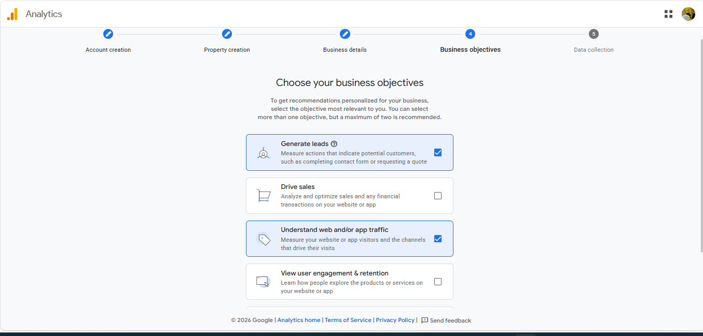
Just like installing an app on your phone, Google needs you to agree to its terms before your account is created.
Tick the little checkbox for the Data Processing Terms, then click I Accept.
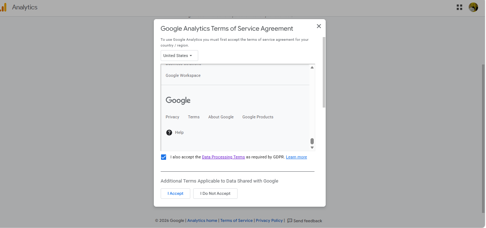
Google is asking where you want to track visitors — your website, an Android app, or an iPhone app. Since we're tracking your website, we'll choose the first one.
Click Web.
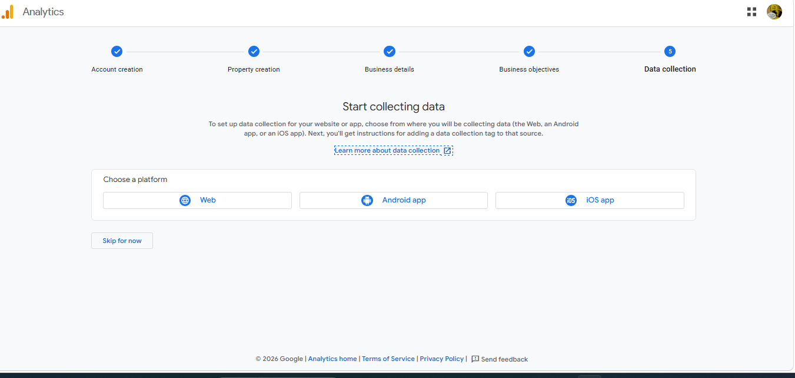
A "stream" is just Google's way of saying "the flow of visitor information coming from your website." You're simply telling it your website's address.
Type in your website's web address (for example, www.yourbusiness.com), give the stream a name if you like, and click Create & continue.
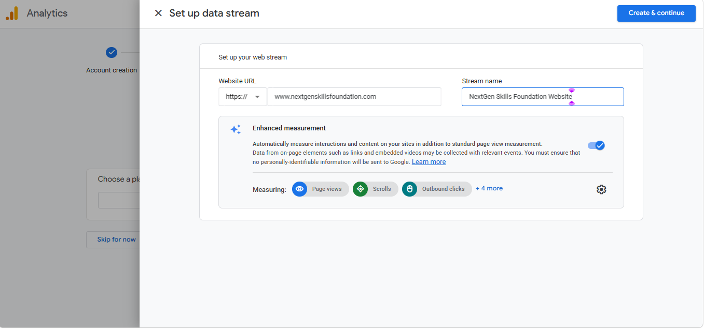
This last screen shows a little piece of computer code. Don't worry about this part at all — this is exactly the technical piece I'll be handling for you once I have access.
You can simply close this window (click the ✕ in the top-left corner). Nothing needs to be copied or pasted by you.
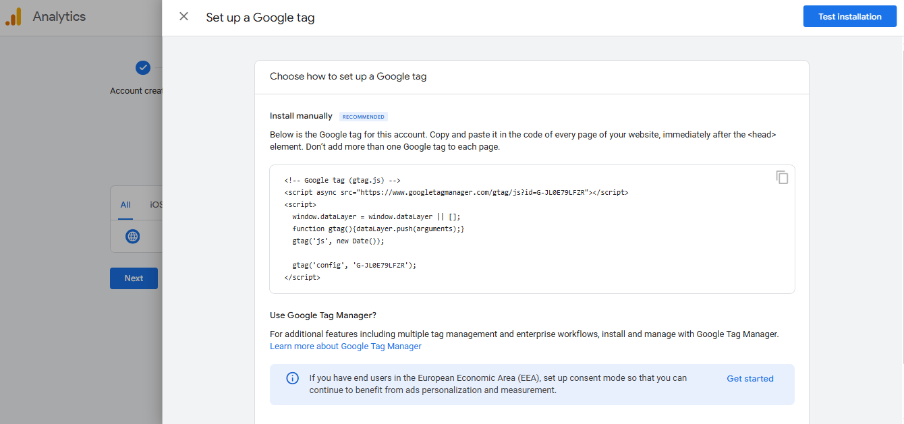
You'll land on a page that says your data collection is "pending" — that's completely normal. It just means Google needs a day or two to start counting visits once the tracking code is in place.
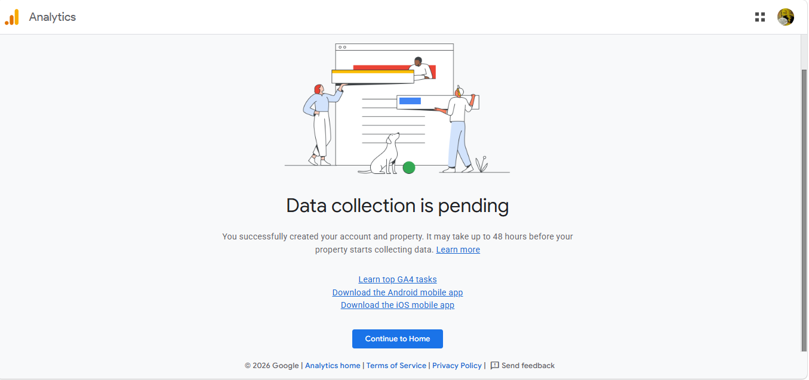
Just three clicks and a copy-paste. This lets me set up your reports and tracking correctly without needing your password.
"Admin" is simply the settings area of Google Analytics — it's tucked away in the bottom-left corner of the screen.
On your Google Analytics home page, click the small gear (⚙️) icon labeled Admin in the bottom-left corner.
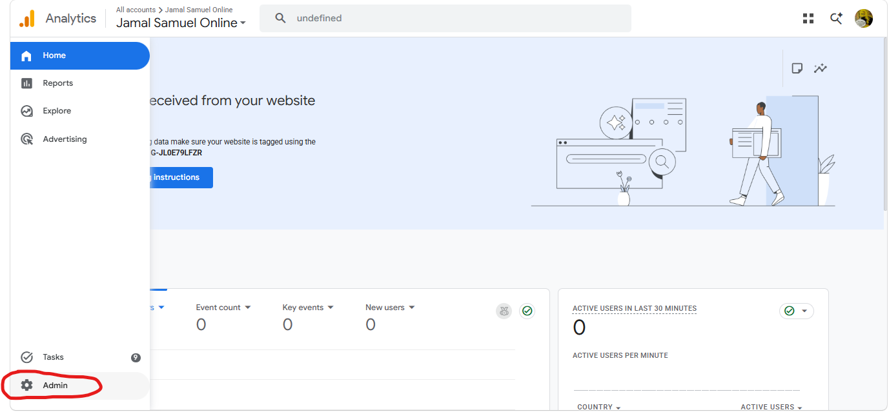
This is the page where you control who is allowed into your account, and what they're allowed to do.
In the left-hand list, under the Account heading, click Account access management.
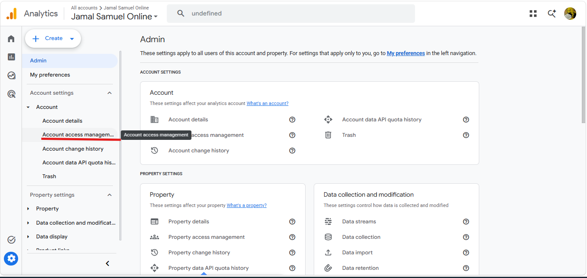
This little blue circle is how you add a new person to your account.
Click the blue + button in the top-right corner of the page.
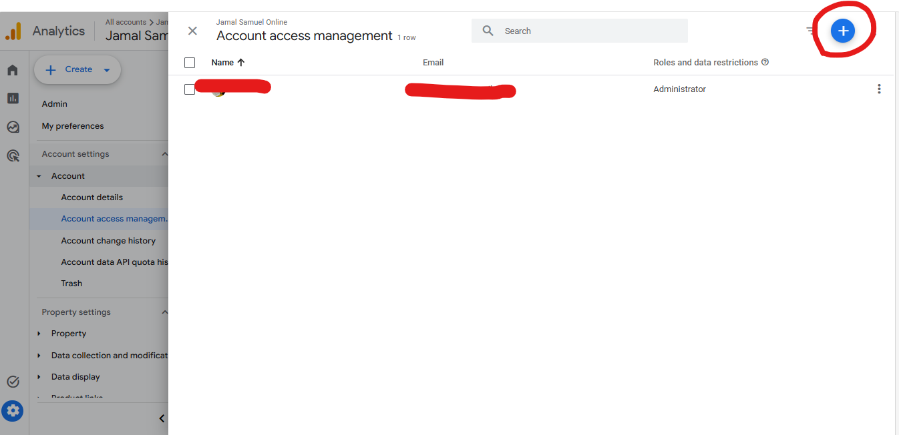
A small menu will pop up with two choices. We want the first one.
Click Add users.
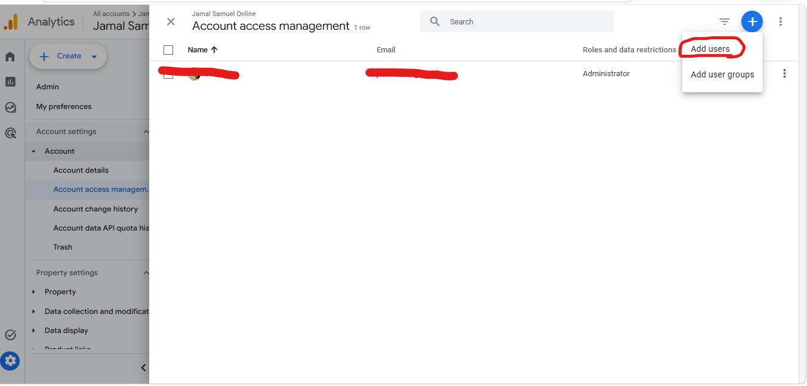
This is the important step — it's how Google knows to let me in, and exactly how much I'm allowed to do.
Type in the email address below, make sure Administrator is selected under "Standard roles," then click the blue Add button in the top-right.
jamalinks758@gmail.com
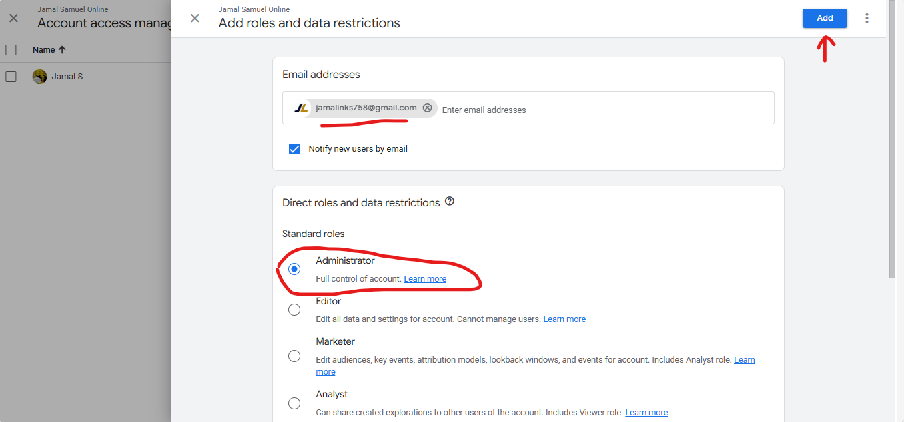
You'll see your list of users update instantly, with the new email showing "Administrator" next to it. That's confirmation it worked.
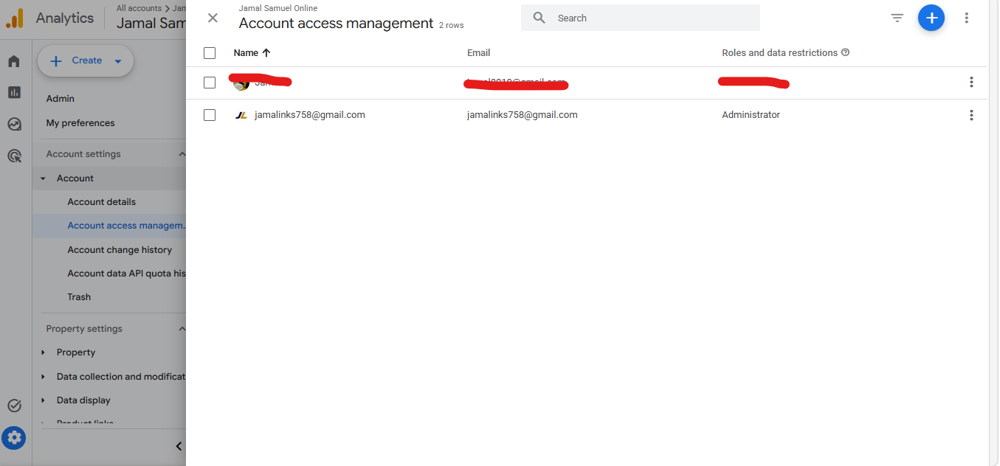
You've just set up your own Google Analytics account and safely handed over the technical keys. I'll take it from here and reach out once your tracking and reports are ready to explore.